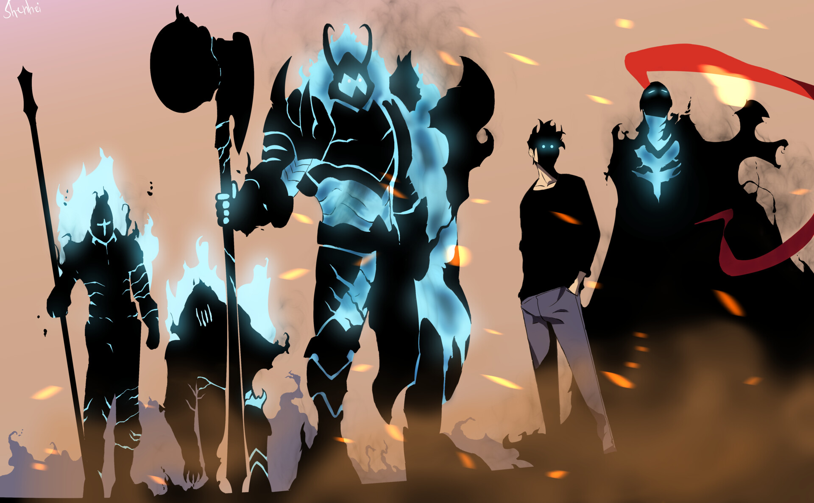

Кейіпкерлер
Solo Leveling әлеміндегі кейіпкерлер – оқиғаның жүрегі. Олардың әрқайсысы өзіндік мінезі, мақсаты және даму жолымен есте қалады. 3D рендерленген портреттер кейіпкерлердің шынайы эмоцияларын ашады.

Сун Джин Ву
Ең әлсіз аңшыдан ең күштіге дейінгі жол. Сун Джин Вудың табандылығы, ақылдылығы және "Жүйе" арқылы алған шексіз күші оны шыңға шығарады. Оның 3D портреті оның эпикалық шайқастарын бейнелейді.

Ча Хэ Ин
S-дәрежелі аңшы, қылыш шебері және сүйкімді кейіпкер. Ча Хэ Иннің күші мен нәзіктігі теңдессіз. Оның 3D бейнесі оның шайқастарын шынайы етеді.

Ю Джин Хо
Сун Джин Вудың адал досы және серігі. Ю Джин Хоның батылдығы мен әзілқойлығы оқиғаға ерекше реңк береді. Оның 3D портреті оның шынайы рухын ашады.